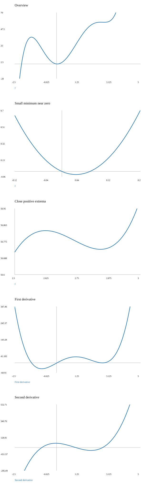

문제 요약
\(f(x)=x^{5} - 5 x^{4} - x^{3} + 28 x^{2} - 2 x\) 함수와 두 도함수의 그래프를 사용하여 중요한 세부 구간을 확대하고 증가·감소, 극값, 오목성, 변곡점을 구하라.

힌트. 최고차항과 한쪽 극한을 살피고 제곱근에서는 절댓값을 유지한다.
해설.
그림을 그리기 전에 정의역의 끊긴 구간과 점근선을 먼저 표시한다. 이어 절편, 극값, 오목성이 바뀌는 점을 놓고 각 구간의 도함수 부호에 맞게 연결한다. 수치 그래프의 창 밖에 있거나 매우 좁은 구간에 있는 특징은 확대와 해석적 부호표로 확인한다.
합의 미분은 각 항의 미분을 더한 것이다. 상수항은 0이 되고, 상수배는 그대로 남는다. \[\frac{d}{dx}\left(- 2 x\right)=-2\]\[\frac{d}{dx}\left(28 x^{2} - \left(- x^{5} + 5 x^{4} + x^{3}\right)\right)=5 x^{4} - 20 x^{3} - 3 x^{2} + 56 x\]
\(f^{\prime}=5 x^{4} - 20 x^{3} - 3 x^{2} + 56 x - 2\)
\(f^{\prime\prime}=2 \left(10 x^{3} - 30 x^{2} - 3 x + 28\right)\)
\(\text{Domain interiors: }(-\infty,\infty)\)
\(\text{Increasing: }(-\infty,-1.49954522)\cup(0.03579918,2.62273517)\cup(2.84101088,\infty);\quad\text{decreasing: }(-1.49954522,0.03579918)\cup(2.62273517,2.84101088)\)
\(\text{Concave up: }(-0.88807316,1.15259181)\cup(2.73548134,\infty);\quad\text{concave down: }(-\infty,-0.88807316)\cup(1.15259181,2.73548134)\)
\(\text{Local extrema: }\text{max}(-1.49954522,36.46876421);\quad \text{min}(0.03579918,-0.03576812);\quad \text{max}(2.62273517,56.83294593);\quad \text{min}(2.84101088,56.73405798)\)
\(\text{Inflections: }(-0.88807316,20.89699638),\quad (1.15259181,26.57072649),\quad (2.73548134,56.78227713)\)
수치 좌표는 근삿값이다. 분모가 영인 곳과 정의역의 틈을 가로질러 그래프를 연결하지 않는다.
최종 답. \(\text{The intervals, extrema, and inflection coordinates listed above determine the plotted curve.}\)
검산·주의점. 극한의 방향·정의역·부호를 확인하고 식 또는 도형의 조건을 대조했다.
Problem summary
\(f(x)=x^{5} - 5 x^{4} - x^{3} + 28 x^{2} - 2 x\) Graph the function and its first two derivatives, zoom into important details, and find monotonicity, extrema, concavity, and inflections.
Hint. Inspect leading terms and one-sided limits; retain absolute values when extracting square roots.
Solution.
Mark domain breaks and asymptotes before sketching. Add intercepts, extrema, and concavity changes, then connect them consistently with derivative signs. Features outside a plotting window or inside a narrow interval require zooming and an analytic sign chart.
Differentiate each term and add. Constant terms vanish and constant coefficients remain. \[\frac{d}{dx}\left(- 2 x\right)=-2\]\[\frac{d}{dx}\left(28 x^{2} - \left(- x^{5} + 5 x^{4} + x^{3}\right)\right)=5 x^{4} - 20 x^{3} - 3 x^{2} + 56 x\]
\(f^{\prime}=5 x^{4} - 20 x^{3} - 3 x^{2} + 56 x - 2\)
\(f^{\prime\prime}=2 \left(10 x^{3} - 30 x^{2} - 3 x + 28\right)\)
\(\text{Domain interiors: }(-\infty,\infty)\)
\(\text{Increasing: }(-\infty,-1.49954522)\cup(0.03579918,2.62273517)\cup(2.84101088,\infty);\quad\text{decreasing: }(-1.49954522,0.03579918)\cup(2.62273517,2.84101088)\)
\(\text{Concave up: }(-0.88807316,1.15259181)\cup(2.73548134,\infty);\quad\text{concave down: }(-\infty,-0.88807316)\cup(1.15259181,2.73548134)\)
\(\text{Local extrema: }\text{max}(-1.49954522,36.46876421);\quad \text{min}(0.03579918,-0.03576812);\quad \text{max}(2.62273517,56.83294593);\quad \text{min}(2.84101088,56.73405798)\)
\(\text{Inflections: }(-0.88807316,20.89699638),\quad (1.15259181,26.57072649),\quad (2.73548134,56.78227713)\)
Numerical coordinates are estimates. Plots are split at poles and gaps in the domain.
Final answer. \(\text{The intervals, extrema, and inflection coordinates listed above determine the plotted curve.}\)
Check and conditions. Limit direction, domain, and signs were checked against the formula or geometric conditions.